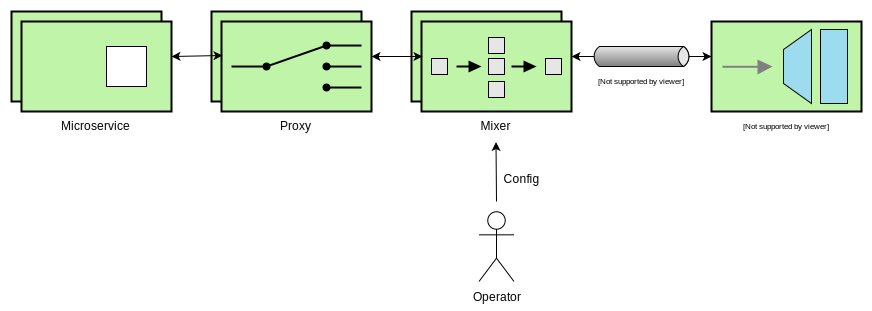

Set sail a production-ready Istio Adapter
So, you’ve walked through the Istio Mixer Adapter guide and want to now publish your own amazing adapter? This post will run you through the process of setting sail your own adapter on the seas of production.

Introduction
Depending on your knowledge of Go, Protobufs, gRPC, Istio, Docker and Kubernetes, you may find the process of publishing an Istio Mixer Adapter from being easy to tasking. This post assumes that you have some experience with these technologies, and that you’ve been able to complete at least one of the walk-throughs from the Istio Wiki.
For the purpose of this post, I’d be talking about building an Istio Mixer Adapter that consumes Metrics. Here’s a run-down of the steps we’ll be looking at:
- The Istio Mixer - Adapter Interface Architecture
- Creating An Out-Of-Tree Mixer Adapter
- Publishing The Adapter To Docker Hub
- Writing Kubernetes Config For The Adapter
- Deploying And Testing The Adapter With Istio
Again, I will try my best to render all the important details in this post to bring your new adapter to life.
The Istio Mixer - Adapter Interface Architecture
Let’s first have a look at how the adapter is to be interfaced with the Istio Mixer. Kubernetes abstracts the interfacing to some extent; however, it’s important for us to understand this, at least, in a little detail.

Here’s a brief description of each of the elements in the architecture above.
- Microservice is a user application that is deployed over Istio
- Proxy is the Istio component, i.e. Envoy Proxy, that controls the network communication in the Service Mesh
- Mixer refers to the Istio component that receives metric (and other) data from the Proxy and forwards it to other components, in this case, the Adapter
- Adapter is the application we’re building which consumes metric data from the Mixer over a gRPC channel
- Operator is an actor who is responsible for configuring the deployment, in this case, Istio and the Adapter
The important thing to note here is that each of these components run as seperate processes, and that they may be distributed over a network. Also, Mixer establishes a gRPC channel with the Adapter for the purpose of providing it with user configuration and metric data.
Creating An Out-Of-Tree Mixer Adapter
For brevity, I’m relying on the Istio Mixer Out Of Tree Adapter Walkthrough for you to follow and build a working out-of-tree mixer adapter. Below is an outline of the steps you’re required to follow to create a working out-of-tree Istio Mixer Adapter that consumes metric data.
- Create
config.prototo represent the Adapter configuration - Create the
mygrpcadapter.goimplementation which handles theHandleMetric(context.Context, *metric.HandleMetricRequest) (*v1beta11.ReportResult, error)gRPC API call - Generate the configuration files via
go generate ./... - Create
main.gowhich creates the gRPC server and listens to API calls - Write the
sample_operator_config.yamlfor the adapter - Test and validate your adapter by starting a local Mixer process
- Configure the out-of-tree project
- Vendor the necessary dependencies (using Go Modules, Glide, Dep, etc. this time)
- Build and test the out-of-tree adapter by starting a local Mixer process
Publishing The Adapter To Docker Hub
Once you have the myootadapter project set up and tested locally, it’s time to build and publish the Adapter to a repository like Docker Hub. Please perform the following steps before proceeding.
- Move the contents of the
mygrpcadapter/testdata/directory to underoperatorconfig/ - Create a file named
Dockerfileto hold the steps to create the Docker image - Finally, create a file named
mygrpcadapter-k8s.yamlunderoperatorconfig/which we’ll use later to deploy the Adapter via Kubernetes
Once you’ve followed these steps, you should have a project structure like below.
── myootadapter
├── Dockerfile
├── glide.lock # Depending on your vendoring tool,
├── glide.yaml # you'd have some files like these.
├── mygrpcadapter
│ ├── cmd
│ │ └── main.go
│ ├── config
│ │ ├── config.pb.go
│ │ ├── config.proto
│ │ ├── config.proto_descriptor
│ │ ├── mygrpcadapter.config.pb.html
│ │ └── mygrpcadapter.yaml
│ └── mygrpcadapter.go
└── operatorconfig
├── attributes.yaml
├── metrictemplate.yaml
├── sample_operator_config.yaml
├── mygrpcadapter-k8s.yaml
└── mygrpcadapter.yaml
Let’s now build the Docker image and publish it to Docker Hub.
Building The Docker Image
The multi-stage builds pattern can be used to build the Docker image. Copy the following contents to your Dockerfile.
FROM golang:1.11 as builder
WORKDIR /go/src/github.com/username/myootadapter/
COPY ./ .
RUN CGO_ENABLED=0 GOOS=linux \
go build -a -installsuffix cgo -v -o bin/mygrpcadapter ./mygrpcadapter/cmd/
FROM alpine:3.8
RUN apk --no-cache add ca-certificates
WORKDIR /bin/
COPY --from=builder /go/src/github.com/username/myootadapter/bin/mygrpcadapter .
ENTRYPOINT [ "/bin/mygrpcadapter" ]
CMD [ "8000" ]
EXPOSE 8000
The CMD [ "8000" ] line tells Docker to pass 8000 as an argument to /bin/mygrpcadapter which is defined by the ENTRYPOINT [ "/bin/mygrpcadapter" ] line. Since we fix the gRPC listener port to 8000 here, we must also update the sample_operator_config.yaml to reflect the same. We do that by replacing address: "{ADDRESS}" with address: mygrpcadapter:8000.
Let’s also update the file_path to store the output on a volume which we’ll create later. Update file_path: "out.txt" to file_path: "/volume/out.txt". You’d then land up with a Handler configuration like below.
apiVersion: "config.istio.io/v1alpha2"
kind: handler
metadata:
name: h1
namespace: istio-system
spec:
adapter: mygrpcadapter
connection:
address: "mygrpcadapter:8000"
params:
file_path: "/volume/out.txt"
Now, we run the following command from the myootadapter directory to build and tag the Docker image.
docker build -t dockerhub-username/mygrpcadapter:latest .
Publishing The Image To Docker Hub
First, login to Docker Hub via your terminal.
docker login
Next, push the image using the following command.
docker push dockerhub-username/mygrpcadapter:latest
Writing Kubernetes Config For The Adapter
Let’s now fill out the configuration for deploying the adapter via Kubernetes. Copy the following configuration to the mygrpcadapter-k8s.yaml file which we created earlier.
apiVersion: v1
kind: Service
metadata:
name: mygrpcadapter
namespace: istio-system
labels:
app: mygrpcadapter
spec:
type: ClusterIP
ports:
- name: grpc
protocol: TCP
port: 8000
targetPort: 8000
selector:
app: mygrpcadapter
---
apiVersion: extensions/v1beta1
kind: Deployment
metadata:
name: mygrpcadapter
namespace: istio-system
labels:
app: mygrpcadapter
spec:
replicas: 1
template:
metadata:
labels:
app: mygrpcadapter
annotations:
sidecar.istio.io/inject: "false"
scheduler.alpha.kubernetes.io/critical-pod: ""
spec:
containers:
- name: mygrpcadapter
image: dockerhub-username/mygrpcadapter:latest
imagePullPolicy: Always
ports:
- containerPort: 8000
volumeMounts:
- name: transient-storage
mountPath: /volume
volumes:
- name: transient-storage
emptyDir: {}
The above configuration defines a simple service with just a single replica which is created out of the image at dockerhub-username/mygrpcadapter:latest. The service can be referred to by name as mygrpcadapter and can be addressed to via port 8000. That’s how the address: "mygrpcadapter:8000" configuration in sample_operator_config.yaml refers to this particular deployment.
Also, notice these special annotations:
annotations:
sidecar.istio.io/inject: "false"
scheduler.alpha.kubernetes.io/critical-pod: ""
This tells the Kubernetes scheduler to not inject the Istio Proxy sidecar if automatic injection is in place. We do that because we don’t really need a Proxy in front of our Adapter. Also, the second annotation marks this pod as critical for the system.
We also create a transient volume named transient-storage which is used for storing the Adapter output i.e. the out.txt file. The following snippet from the above configuration enables us to do that.
volumeMounts:
- name: transient-storage
mountPath: /volume
volumes:
- name: transient-storage
emptyDir: {}
Deploying And Testing The Adapter With Istio
Again, for brevity, I’m relying on the project documentation for you to deploy Istio, run the Bookinfo sample application and to determine the ingress IP and port.
Deploying The Adapter
We can now deploy the Adapter via Kubernetes like so:
kubectl apply -f operatorconfig/
This should deploy the mygrpcadapter service under the istio-system namespace. You can verify this by executing the following command.
kubectl get pods -n istio-system
This would print a log like below.
NAME READY STATUS RESTARTS AGE
istio-citadel-75c88f897f-zfw8b 1/1 Running 0 1m
istio-egressgateway-7d8479c7-khjvk 1/1 Running 0 1m
.
.
mygrpcadapter-86cb6dd77c-hwvqd 1/1 Running 0 1m
You could also check the Adapter logs by executing the following command.
kubectl logs mygrpcadapter-86cb6dd77c-hwvqd -n istio-system
It should then print the following log.
listening on "[::]:8000"
Testing The Adapter
Execute the following command in your terminal, or hit the http://${GATEWAY_URL}/productpage URL in your browser to send a request to the Bookinfo deployment.
curl -o /dev/null -s -w "%{http_code}\n" http://${GATEWAY_URL}/productpage
Verify the output in the /volume/out.txt file by accessing the Adapter container.
kubectl exec mygrpcadapter-86cb6dd77c-hwvqd cat /volume/out.txt
You should see an output like below.
HandleMetric invoked with:
Adapter config: &Params{FilePath:/volume/out.txt,}
Instances: 'i1metric.instance.istio-system':
{
Value = 1235
Dimensions = map[response_code:200]
}
Conclusion
Istio provides a standard mechanism to manage and observe microservices in the cloud. Mixer enables developers to easily extend Istio to custom platforms. And, I hope that this guide has given you a glimpse of the Istio Mixer - Adapter interfacing, and how to build a production-ready Adapter yourself!
Go, publish your own Istio Mixer Adapter! Feel free to use the Wavefront by VMware Adapter for Istio for reference.
Also, refer to this Wiki if you wish to publish your adapter on the Istio Adapters page.
Disclaimer: My postings are my own and don’t necessarily represent VMware’s positions, strategies or opinions.